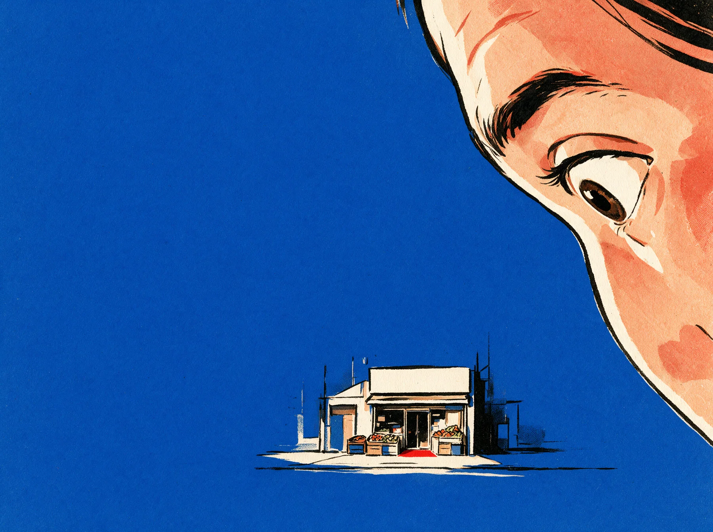
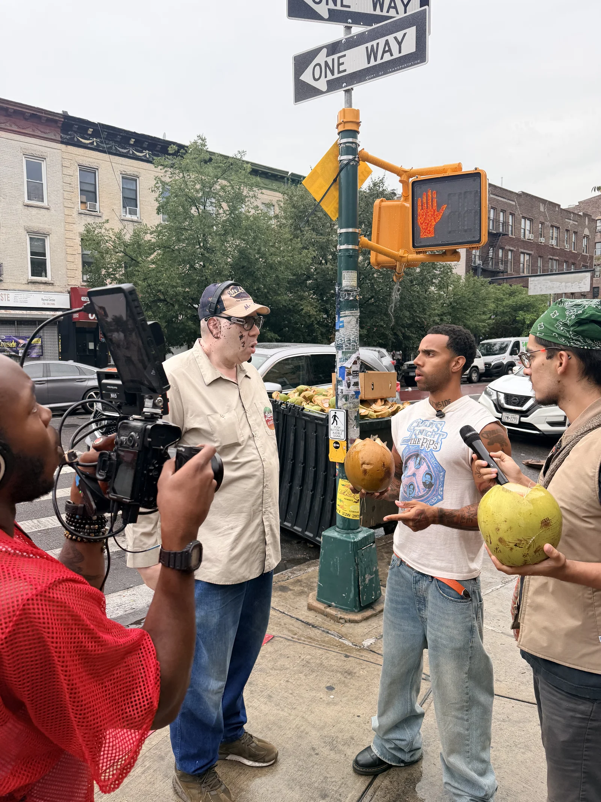
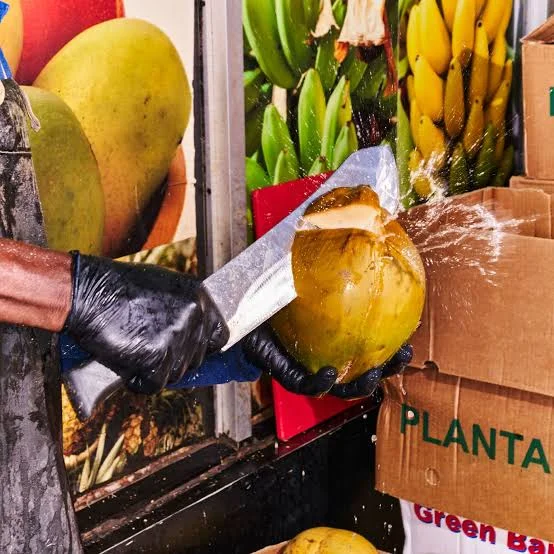
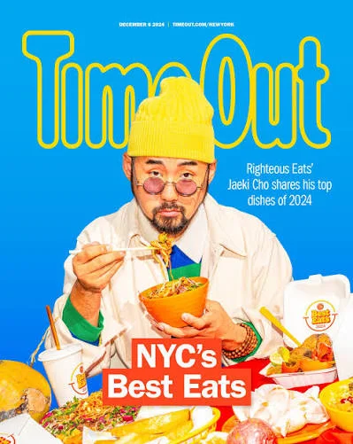
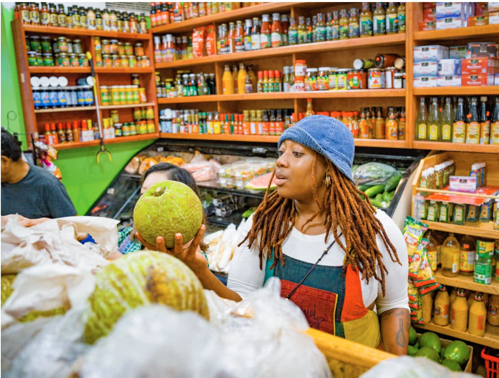
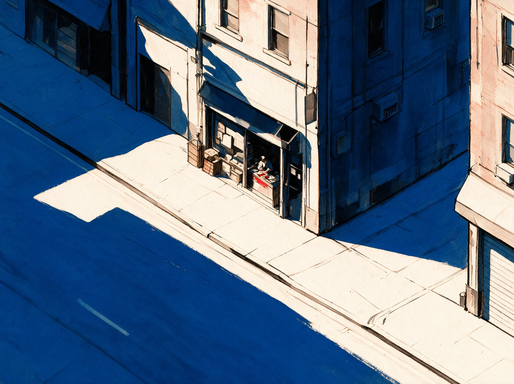

Attention Demand Revenue
Attention should pay.
STIR builds the content, strategy and systems that turn attention into demand — and demand into revenue.
01 — Attention
02 / Thesis
The argument · 02 / 07
Most businesses don’t need more content
They need something worth talking about.
The interesting part is usually already there. We find it, build the story around it, put it in front of the right people and give them a reason to act.
Labay
Market.
The role STIR is Labay Market’s digital and systems operator. Since 2025.
10M+
Organic views
We didn’t invent Labay’s story. We built the system that helped more people see it.




It paid.
The attention turned into brand partnerships — Nike, Red Bull and TurboTax came to the market.
Also in the system · Kemoy Martin · MarcoEatsWorld · Nicolas Nuvan · + more
04 / What we do
We make the work, put it in front of the right people and build the system that turns their attention into business. More calls. More orders. More bookings. More customers.
- Positioning
- Audience
- Offer
- Content opportunities
- Growth opportunities
- Brand identity
- Websites
- Photography + video
- Short-form content
- Campaigns
- Content calendars
- Social distribution
- Paid media
- Campaign launches
- Lead + sales systems
05 / What you leave with
You don’t hire us for more stuff.
You leave with a sharper reason for people to care, the work that communicates it, and a system for getting it in front of them.
01
The angle
What should people care about?
Positioning, offer, insight, creative direction.
02
The work
What do they need to see?
Identity, campaigns, content, photography, video, websites.
03
The system
How does attention become business?
Distribution, launches, paid media, sales infrastructure, conversion.
Brand. Content. Campaigns. Web. Distribution. Sales. Whatever the idea requires.
06 / Who this is for
We work with businesses that already do something well.
The product is good. The service is good. The operation works. What’s missing is that not enough of the right people know yet — and nothing is turning the ones who do into revenue.
What that looks like
Turn daily operations into content people travel for.
Short-form · Merchandising story · Foot traffic
The category matters less than whether there’s something real to work with.
Not for you if
The business isn’t doing the volume yet to invest in an operator, or isn’t ready to grow the operation. We’d rather tell you that early than take the work.

What are
we not
seeing yet?
There’s probably something inside your business people would care about. Tell us about it and we’ll tell you what we see — whether or not we end up working together.
01
You send it.
A few lines about the business.
02
We look at the business.
Properly. The product, the operation, the market.
03
We tell you what we see.
Free, either way.